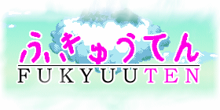
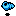

Story Overview
Fukyuuten follows the misadventures of Anastasia, a monster-killing fisherwoman whose
primary idea of making a living is ramming a spear into it and selling its carcass. The proverbial
alligator hits the fan when her best friend, a half-bird, half-wolf merchant archeologist
named Friedrich, finds an ancient artifact made by the Kojima, a mysterious ancient race of people.
It's a timeless story of heroism, floating islands, monsters, and one bit honkin' fish.
Sweet candy!
An apology
This release should be construed to be a preview and not a finished demo. Unfortunately,
time was not on our side this time, and we did not finish what we had set out to do. Look forward
to a more complete demo in the next few weeks.
Controls
- Arrow Keys
- Move the player, move the cursor in menus, et cetera.
- Escape
- Opens the subscreen menu.
- Space bar
- Activate objects, attack with primary weapon.
- F
- Secondary attack with current melee weapon
- A, S, and D
- Use various items and tools that may (or may not) be acquired as the game progresses...
Things to Look out For
- Conch Shell
- Can be traded for all sorts of things, like weaponry and medicine.
- Skull
- Skulls shiver your timbers when you eat them. They stay crunchy in milk and have a taste that keeps you growling for more!
- Golden Egg
- Permanently increases your defense. Grab as many of these as you can!!
Tips
Friedrich is a stuffy old man with no sense of humour. Don't listen to him!
Credits
- Andy
- Director. Lead Coder.
- Thrasher
- Maps, AI Scripting, Game Balancing.
- Corey
- Art Deity, Maps
- Hatchet
- Maps, Event Scripting.
- Troupe
- Sound, Music, Maps.
- Kael
- Tester, Cheerleader, Assorted Code
- MyNameIsJeff
- Tester, Cheerleader